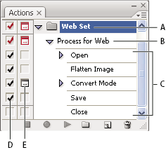

Actions palette overview
You use the Actions palette (Window > Actions) to record, play, edit, and delete individual actions. This palette (called the Actions panel in Illustrator) also lets you save and load action files.

Photoshop Actions palette
- A.
- Action set
- B.
- Action
- C.
- Recorded commands
- D.
- Included command
- E.
- Modal control (toggles on or off)
 Expand and collapse sets, actions, and commands
Expand and collapse sets, actions, and commands
 Click the triangle to the left
of the set, action, or command in the Actions palette. Alt-click
(Windows) or Option-click (Mac OS) the triangle to expand
or collapse all actions in a set or all commands in an action.
Click the triangle to the left
of the set, action, or command in the Actions palette. Alt-click
(Windows) or Option-click (Mac OS) the triangle to expand
or collapse all actions in a set or all commands in an action.View actions by name only
Choose
Button Mode from the Actions palette menu. Choose Button Mode again
to return to list mode.
Note: You can’t view individual commands or sets in Button
mode.